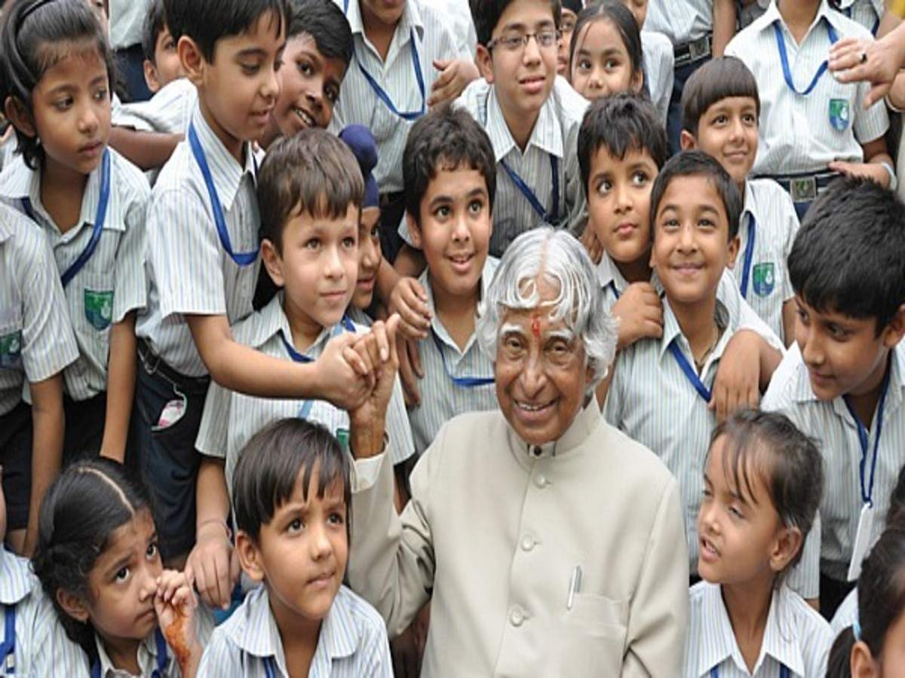

Dr. A.P.J. Abdul Kalam
" Missile Man of India , The People's President "

Kalam Sir with Students
Here's a time-line of his life...
A very simple person who lived an unpretentious lifestyle. He had a keen interest in literature and wrote poems. He never married. He always faced media himself for his failures while let others address for the success. He remained active till the very end. He died while delivering a lecture at the IIM.
-
1931 - Born in Rameswaram, Tamil Nadu.
-
1954 - Graduated in Physics from University of Madras.
-
1960 - Graduated in Aerospace Engineering from Madras Institute of Technology.
-
1961 - Joined DRDO as a scientist.
-
1969 - Joined Space Research at ISRO.
-
1980 - Became the project Director for India's First Indegenous Satellite Program.
-
1980 - Was involved in the development of several Indegenous Missiles for India like Agni, Prithvi.
-
1981 - Awarded Padma Bhushan.
-
1990 - Awarded Padma Vibhushan.
-
1992 - Chief Advisor for the India's Nuclear Program.
-
1997 - Awarded Bharat Ratna.
-
2002 - Became 11th President of India.
-
2015 - The People's President passes away while doing what he loved the most, addressing students.
" Look at the sky. We are not alone. The whole universe is friendly to us and conspires only to give the best to those who dream and work. "
- Dr. A.P.J. Kalam
For further Information visit this link.